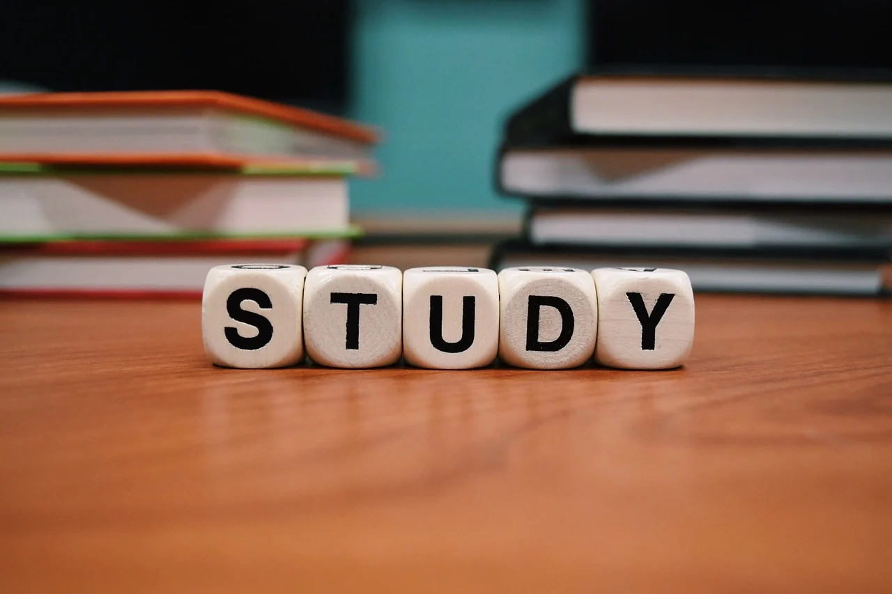
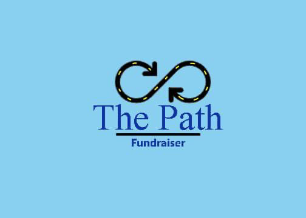

I’ve been involved with the business club Deca at my school since grade 10 now.
I’m extremely interested in business and I like public speaking; so Deca gave me
a platform to enhance my skills and portray my preexisting knowledge. Last year
I became a top 8 provincial champion in my category, which was truly an honour
and something I really enjoyed. We went to the Sheridan hotel where we spent 3
nights and I consider those one of the most memorable nights of my life. I also
participated in Deca this year, currently competing in the provincial finals.
Academics
At school, I’m a firm believer in excelling in education before achieving anything else.
I tend to spend a lot of time studying and refining my knowledge, as I want to get into
a prestigious university to study. I truly enjoy all the courses at my school but I absolutely
despise French! As of grade 11 I’m aiming for a 95 average, which is truly doable if I show dedication and hardwork.
 Picedia / CC BY-SA (https://creativecommons.org/licenses/by-sa/4.0)
Charity
 By Rudra and The Path Fundraiser
In the summer of 2020, me and my friend saw a rising problem in long term care homes for
COVID-19 patients. Because of this, we got together and started a fundraising campaign,
to help equip the long term care home with the required materials to ensure the safety of
the staff and the patients. Due to this, we were able to raise $750; which is an everlasting
accomplishment I possess as it helped other people survive and thrive.
 By Rudra
By Rudra